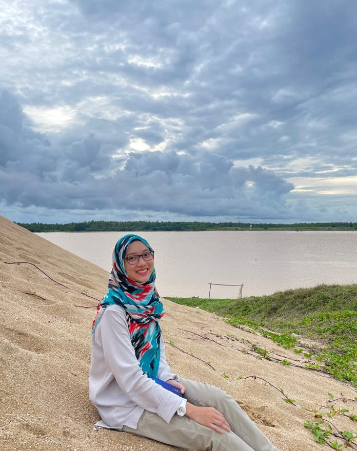

|
Every person has their own unique story.
I had no idea what I was doing.
I didn’t even know it was a personal website (I didn’t even know what a personal website was to be honest).
But here is a glimpse into mine.

I am Che Nur Anis Bt Che Ghazali and I was born and raised in Kota Bharu Kelantan.
I work as administrator at Telecommunication Company. I'm currently a part time student in Bachelor of Business Administration (Hons) Finance at the Universiti Teknologi MARA.My strengths include attention to detail, organization and the ability to take criticism.I believe that commitment and passion are factors that will help me succeed with my work.
I’ve found balance between work and life, now I’m totally happy person, hardworking worker and student but it didn’t come easily.
I’ve gone through hundreds of failures and complicated situations but I got to where I am today.
My Educational Background

DEGREE
2021-Present
Universiti Teknologi MARA, UiTM, Kampus Kota Bharu, Cawangan Kelantan
Bachelor of Business Administration (Hons.) Finance
Currently studies in semester 5
DIPLOMA
2016-2020
Universiti Teknologi MARA, UiTM, Kampus Kota Bharu, Cawangan Kelantan
Diploma in business studies
|